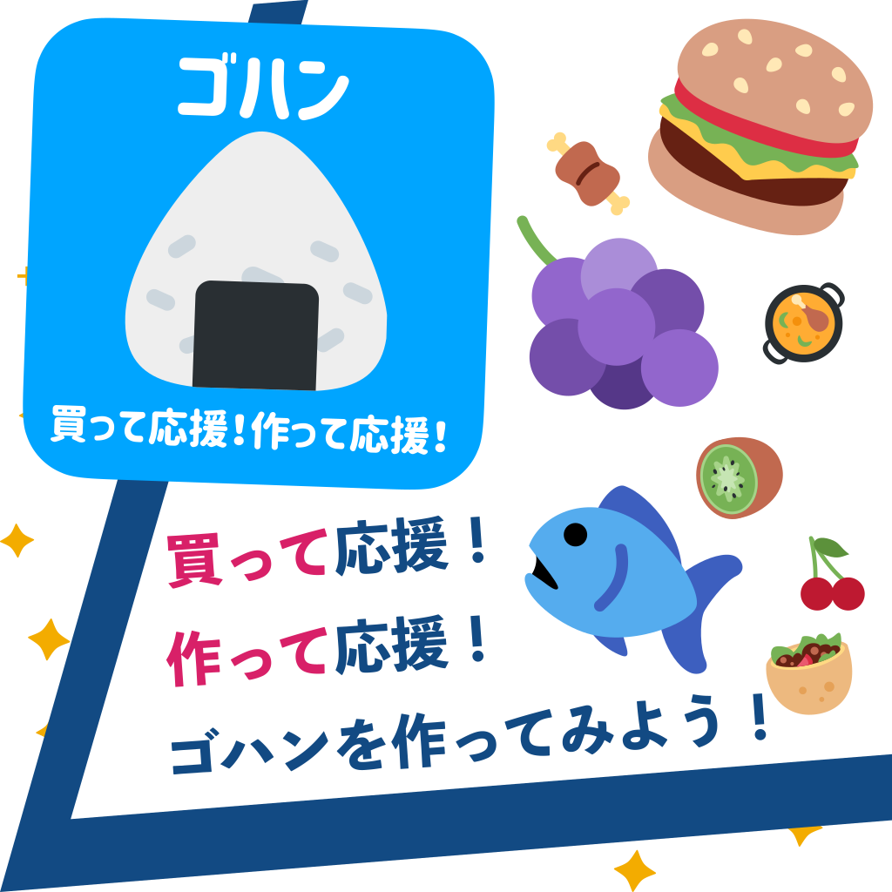
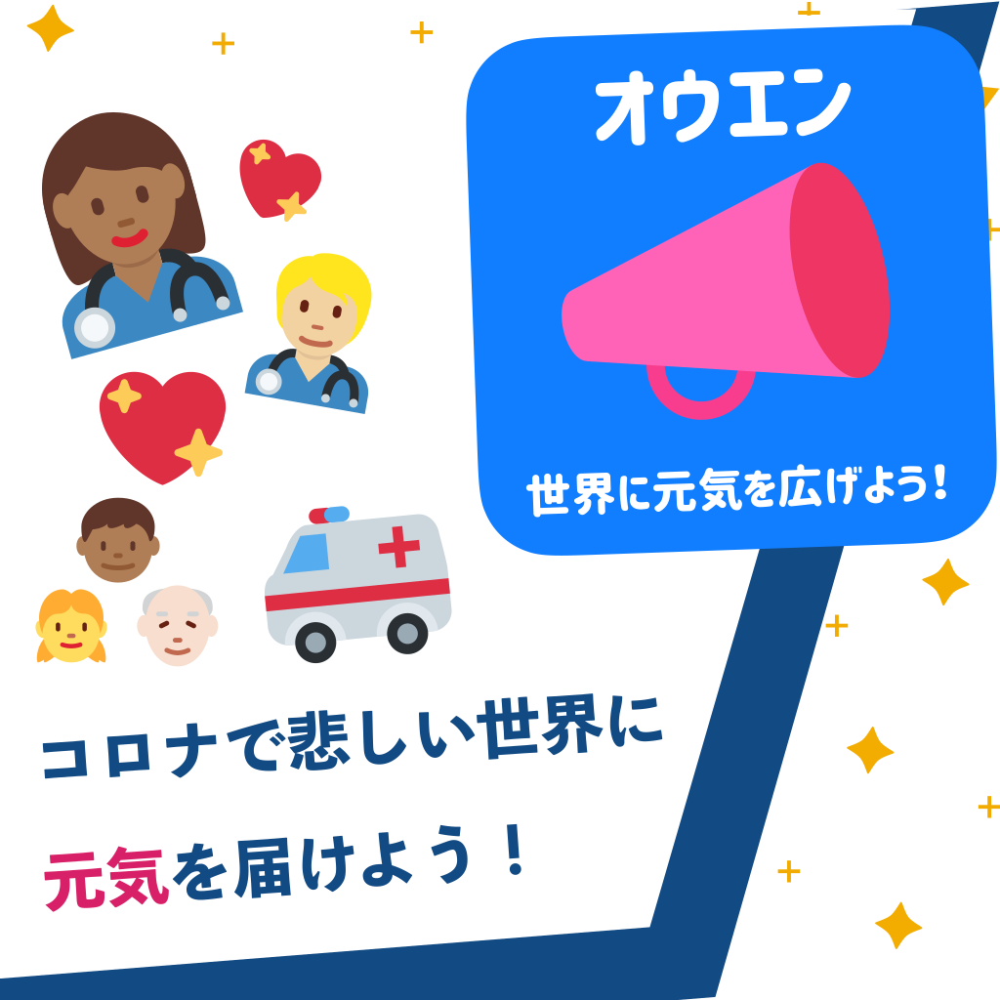

高校生が主体となり、全国の高校生がコロナによる自粛期間に得た、新たな学びを発信するオンラインコンテストです。
ビヨンドコロナコンテストでは、３つのテーマから１つ選んでもらいます。
最終的には、グランプリ・準グランプリ・特別賞が審査員によって選ばれます。
新型コロナウイルの感染拡大による緊急事態宣言が全国に発令されてから約1ヶ月が経ちました。
多くの高校生が自宅待機を余儀なくされています。コロナの影響を受け、インターハイや甲子園が中止され、入学したのに入学式がなかったり様々なイベントが中止されています。
このコンテストは、そんな私たちの青春を奪ったコロナの流行を乗り越えるために開催されます。
そして、全国の高校生のコロナ生活や、新しく学んだことを募集し、それらをオープンにすることで、日本全体に希望をもたらせようというのが、このプロジェクトの発端です。みなさんも応募して日本を明るくしていきませんか？
ルールはこちら↓
ルールを見るをクリック！
2020/4/27 17:20
ホームページが公開されました。
2020/5/1 10:00
応募規約が追加されました。
Q.未発表のものとありますが、提出後に出したものをSNSに投稿してもいいいですか？
A.応募してもらったものはSNSにあげてもらって構いません。